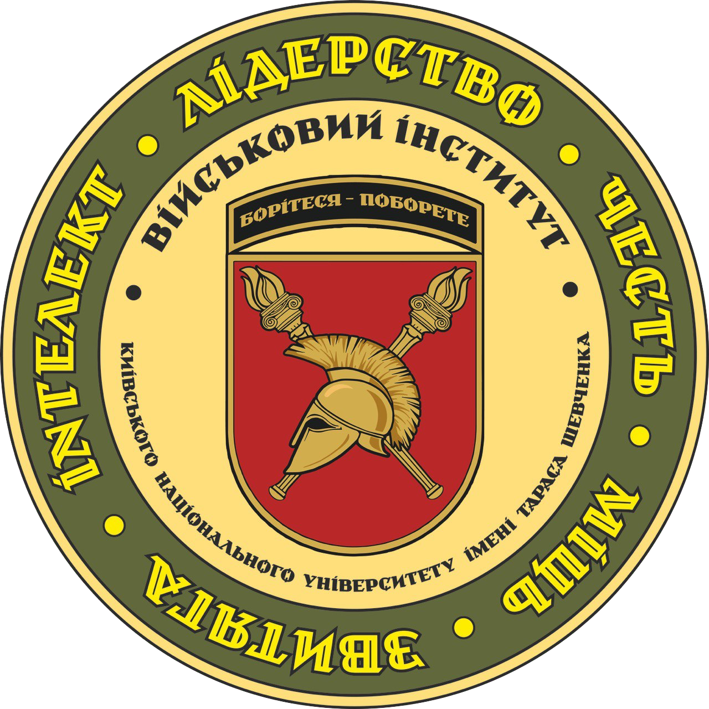

Освіта
Освітня діяльність у Військовому інституті Київського національного університету імені Тараса Шевченка (далі – ВІКНУ) реалізується як освітній процес, проводиться з метою забезпечення здобуття вищої освіти, задоволення інших освітніх потреб курсантів, слухачів, студентів, ад'юнктів та здійснюється на підставі ліцензії на провадження освітньої діяльності КНУТШ серія АЕ № 636455 від 09.06.2015 та сертифікатів про акредитацію, передбачає видачу випускникам ВІКНУ документів про вищу освіту за акредитованими освітніми програмами. Освітня діяльність ВІКНУ спрямована на організацію, забезпечення (навчально-методичне, кадрове, інформаційне, матеріально-технічне (логістичне) забезпечення тощо) та реалізацію освітнього процесу.
Навчальна робота
Освітній процес у Військовому інституті Київського національного університету імені Тараса Шевченка (далі – ВІКНУ) проводиться з метою підготовки висококваліфікованих військових фахівців за першим (бакалаврським) та другим (магістерським) рівнями вищої освіти, рівнями військової освіти для комплектування посад офіцерського складу в Міністерстві оборони України, Збройних Силах України та інших складових сил оборони, забезпечення набуття ними нових та вдосконалення раніше набутих компетентностей за програмами післядипломної освіти та в системі професійної військової освіти, а також задоволення інших освітніх потреб курсантів, слухачів, студентів, ад'юнктів (далі – здобувачі освіти) та здійснюється на підставі ліцензії на провадження освітньої діяльності Київського національного університету імені Тараса Шевченка (далі – КНУТШ) та сертифікатів про акредитацію, передбачає видачу випускникам ВІКНУ документів про вищу освіту за акредитованими освітньо-професійними програмами.
Дистанційне навчання
Курси підвищення кваліфікації та професійної військової освіти
(КПК, КПВО)

https://eduviknu.mil.gov.ua
Платформа дистанційного навчання для курсантів та слухачів
Схема підготовки
Здобуття певних ступенів вищої освіти та рівнів військової освіти передбачає поєднання формальної та неформальної освіти. У рамках формальної освіти ВІКНУ провадить освітній процес на підставі діючої ліцензії КНУТШ на провадження освітньої діяльності за першим (бакалаврським) і другим (магістерським) рівнями вищої освіти та видає випускникам, які опанували відповідну освітньо-професійну програму та успішно склали атестацію, документи про вищу освіту за відповідною акредитованою освітньо-професійною програмою (спеціальністю). У рамках неформальної освіти освітній процес у ВІКНУ здійснюється за освітніми програмами курсів професійної військової освіти та передбачає видачу особам, які успішно завершили навчання відповідного свідоцтва (сертифіката).

Професійна військова освіта є спеціалізованою освітою військового спрямування, яка здобувається на курсах професійної військової освіти тактичного рівня. При формуванні змісту професійної військової освіти додатково враховуються вимоги стандартів НАТО.
В освітнньо-професійні програми підготовки офіцерів тактичного рівня за ступенем вищої освіти “бакалавр” інтегровано базовий курс тактичного рівня L-1A (40 кредитів) та фаховий курс тактичного рівня L-1B (30 кредитів). Командний курс тактичного рівня L-1C (20 кредитів) інтегровано в освітні програми підготовки офіцера тактичного рівня за ступенем вищої освіти “магістр”.
Під час підготовки фахівців за програмами курсів L-1A, L-1B, L-1С вивчаються питання процедури планування TLP (Troop Leading Procedures) та MDMP (Military Decision Making Process).